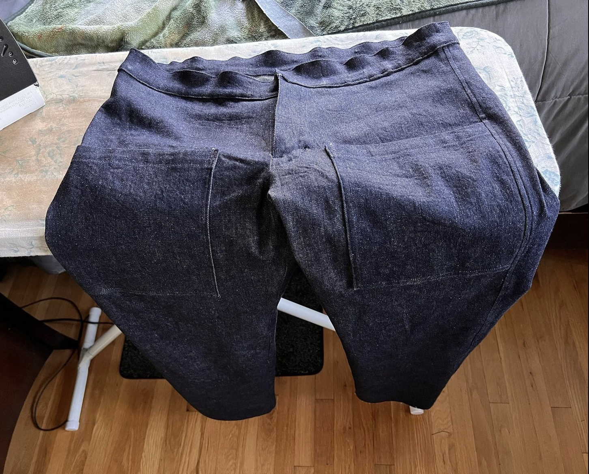
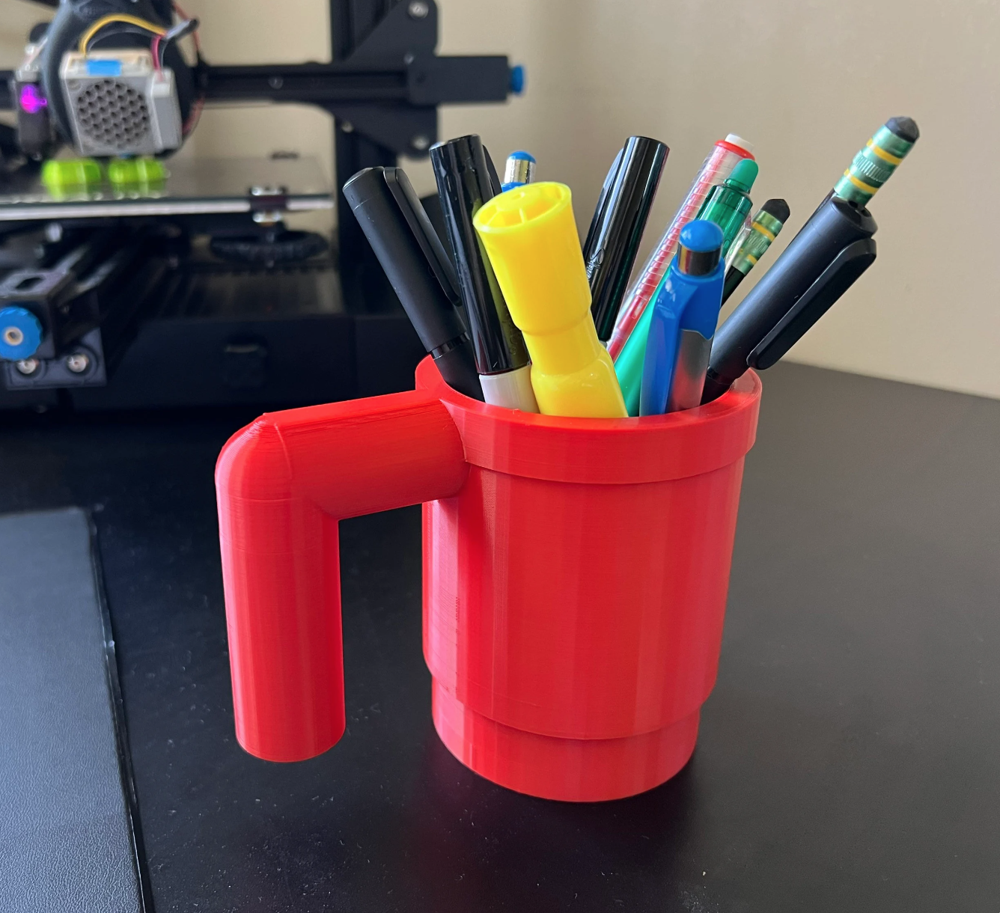
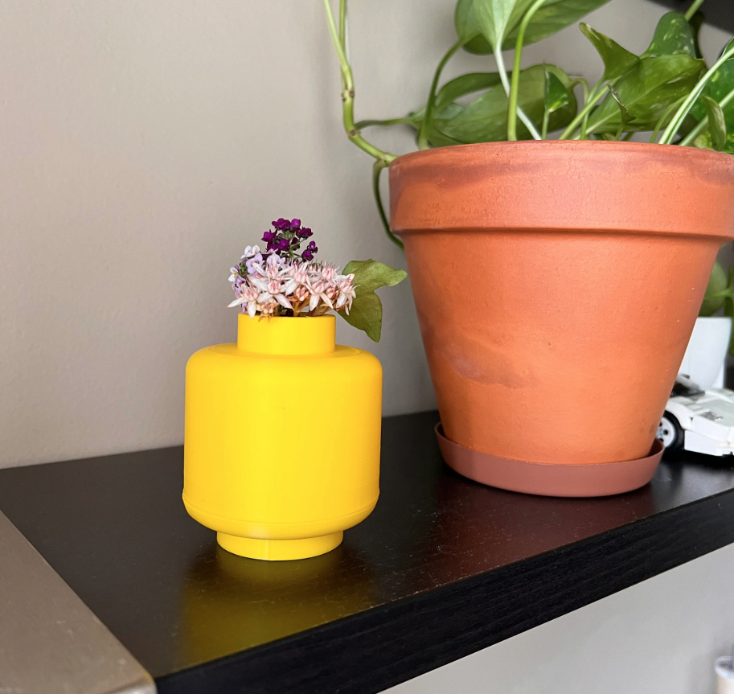

Personal Projects and Hobbies
Here are some things that I have done in my free time

Denim Pants
These jeans were inspired by vintage navy pants with large front pockets. They were designed and constructed by myself using a heavy weight, dark indigo denim.

Railroad Pants
Designed and constructed by myself, these pants are made from a railroad stripe denim and feature large fatigue pockets on the front and patch pockets with buttoning flap closures on the back.

Life-size Lego Mug
Created using Tinkercad, this 3D printable design brings the small Lego piece to life as a 1:1 scale replica.
Can be purchased at: 3D General Store
Technologies: Tinkercad, PrusaSlicer, Ender 3 S1

Minimalist Style Vase
Designed using Shapr3d, I modeled this vase after a Lego head and printed it on my Ender 3 S1.
Can be purchased at: 3D
General Store